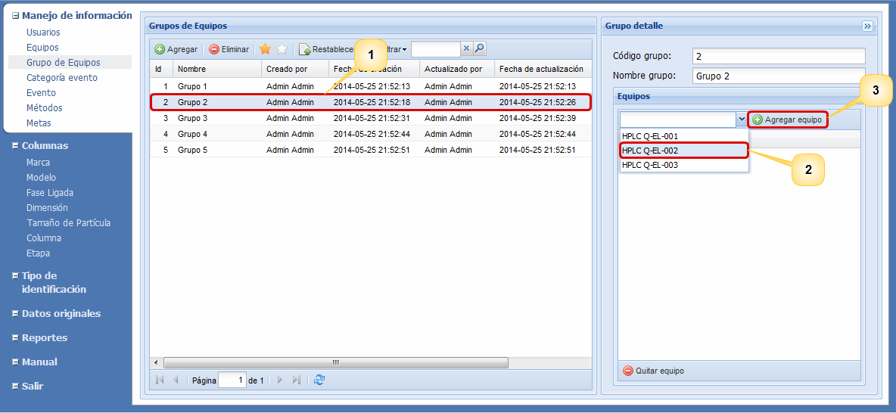
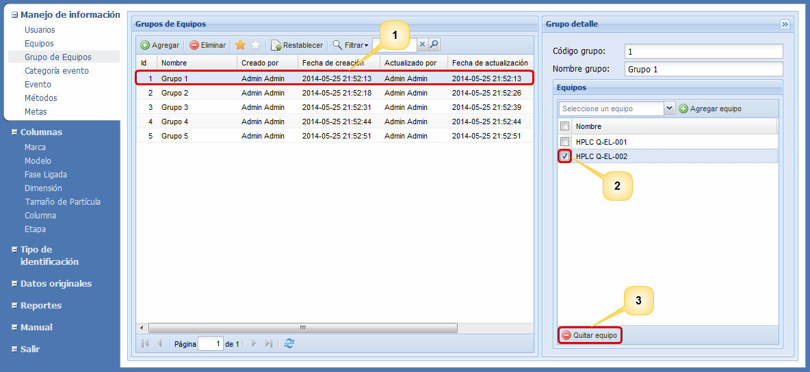

Agregar
grupo
Para
agregar un tipo
de identificación pulse
el botón Agregar, a continuación
diligencie el nombre del nuevo tipo
de identificación en
la fila que aparece al inicio de la lista y pulse el botón Guardar.
En caso de querer cancelar el proceso de registro de un
nuevo tipo de identificación debe pulsar el botón
Cancelar.
Actualizar
Para
actualizar la información de un
grupo de equipos, debe dar doble clic sobre
el grupo
de equipos que
desea modificar, luego editar la información
sobre el campo de texto ubicado en la columna Nombre y
pulsar el botón Guardar. El
sistema desplegará una pequeña ventana donde debe ingresar
la razón de la actualización de la información del grupo de
equipos. Una vez ingresada dicha razón, debe pulsar el
botón Aceptar. Luego
el sistema le mostrará un breve mensaje en el que le
informará del éxito de la actualización.
Eliminar
Para
eliminar un grupo de equipos,
seleccione de la lista de grupos registrados el grupo de
equipos que desea eliminar y
pulse el botón Eliminar.
El sistema
desplegará una pequeña ventana donde le preguntará si
realmente desea eliminar el grupo de equipos en
donde debe seleccionar la opción Si, luego el sistema le
preguntará la razón por la cual desea eliminarlo, digite
la razón y pulse el botón Aceptar. El
sistema le mostrará un breve mensaje en el que le
informará del éxito de la eliminación. En el
listado de grupos de equipos eliminados denotado por una
estrella blanca podrá observar el grupo de equipos que
eliminó anteriormente.
Restablecer
Bajo el supuesto de
que usted haya eliminado un evento
sin querer, usted tiene la posibilidad de recuperar la
información seleccionando la opción para ver los eventos
eliminados (estrella blanca), seleccione de la lista el evento
que desea recuperar y pulse el botón Restablecer, el sistema
le preguntará porque razón desea restablecerlo,
digite la razón y pulse el botón
Aceptar. Luego el
sistema le mostrara un breve mensaje en el que informa si se
ha restablecido con éxito.
Agregar equipo
Para agregar un
equipo a un grupo de equipos, seleccione el grupo de equipos (1)
y en el formulario que se encuentra ubicado al lado lado derecho de la interfaz
seleccione el nombre del equipo (2) y pulse el botón
Agregar equipo (3), tal
y como se evidencia en la Figura 2. Una vez realizados los
anteriores pasos, el sistema mostrará un mensaje en el que le
informará del éxito de la operación.

Figura 2. Pantalla para agregar un
equipo a un grupo.
Quitar equipo
Esta funcionalidad permite eliminar un equipo de un
grupo de equipos. Para llevar a cabo este proceso,
seleccione un
grupo de equipos de la lista de grupos registrados (1), luego
seleccione de la lista de equipos ubicada al lado derecho de la
interfaz el equipo que desea eliminar (2) y pulse el botón de Quitar
equipo (3), tal y como se evidencia en la Figura 3.

Figura 3 Pantalla para quitar un
equipo de un grupo.